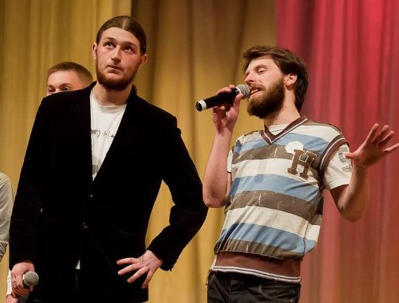
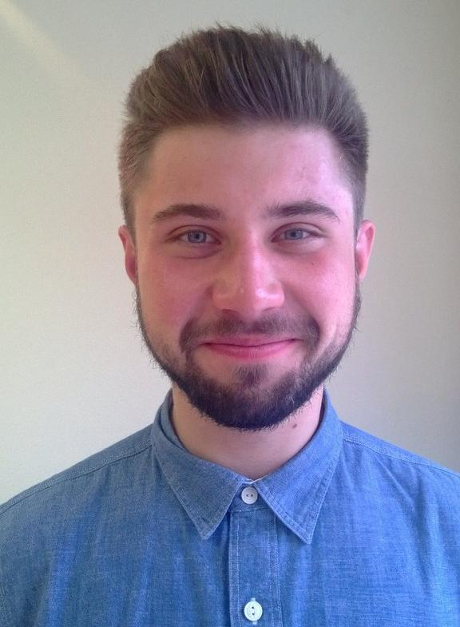

Date: Dec 6, 2013
Брить или не брить - вот в чем вопрос?

Как известно, ноябрь считается месяцем небритости, или, иначе говоря, «месяцем Бороды». У мужчин уже вошло в традицию именно в этот период осени не бриться. Ведь бриться - это боль, а иметь хороший предлог, чтобы этого не делать — безмерное счастье. Первые пару недель ты будешь выглядеть странно, зато конечный результат тебя обрадует - и, кто знает, может, ты и вовсе не захочешь расставаться со своим новым образом.
В чем положительные стороны ношения бороды? Имидж, мода, внимание противоположного пола. Почти каждый мужчина хотя бы раз в жизни отпускал себе бороду. Это весьма интересный эксперимент. Отрастить бороду большого ума не требуется - не брейся, да и все дела. И лишь малая часть мужчин, попробовавших носить пучок волос на подбородке, оставляет себе его на годы или, тем более, на всю жизнь. А нам хотелось бы помочь нашим мужчинам сделать правильный выбор.
- Изменение имиджа.
С бородой в мужчине сразу же появляется некая мужественность. Он становится предметом восхищения и внимания. Сам мужчина преображается внутренне, чувствует себя старше, мудрее, строже. Борода делает мужчину более самоуверенным. - Одной головной болью меньше.
Ты сразу почувствуешь себя чуть свободнее, избавившись от необходимости бриться ежедневно. Теперь можно не покупать крем для бритья и лосьон после бритья, не менять лезвия, не мучиться от ежедневного раздражения — масса плюсов, что ни говори. И гораздо меньше поводов для беспокойства и тревог. - Ради удовольствия.
Когда ты отращиваешь свою первую бороду — это счастье. Это почти как накачать мышцы или похудеть — сделать что-то, что требует от тебя серьезных усилий и долгосрочной целеустремленности. Потом твое удовлетворение при виде результата ни с чем не сравнится. Ты хотел, ты стремился — и ты смог! - Очень даже неплохой предлог.
Теперь ты перестаешь быть в глазах людей лентяем или неряхой и превращаешься в экстравагантного парня, достойного внимания и уважения. «Почему не бреюсь? Ты серьезно? Ты что, не слышал про «No Shave November»? В этом месяце ни один уважающий себя мужчина не бреет бороду — это акт мужской солидарности». - Защита от холода.
Наступает по-настоящему холодное время. Глупо при таком раскладе ходить без бороды, ведь можно наслаждаться не только своим новым стилем, но и теплом. Зачем намеренно подставлять лицо холоду, если можно надежно укутать его бородой? - Эксперимент: идет или не идет.
Это же интересно, если ты ни разу не пробовал. Когда-нибудь да хотелось, но было как-то страшновато, ведь так? Дай себе месяц, посмотришь на себя в другом виде. Слишком большой за такой срок она не вырастет, зато какой эксперимент! - Борода – дар свыше.
Ну, серьезно, если у тебя растет борода, почему ты всегда должен ее сбривать? Другими словами, если ты можешь отрастить бороду — почему бы и нет? Мужчины от природы могут отращивать бороду, и, когда они бреются, они как бы выражают свой протест, потому что отвергают тот щедрый дар, которым она их наградила. - Стильно, модно, молодежно.
Особенно это становится трендом в зимние месяцы. Мы не то чтобы предлагаем продать душу законодателям мод и беспрекословно следовать всем их указаниям — но ведь иногда забавно вписаться во всеобщую тенденцию. Побудешь модником, а потом борода выйдет из моды, и станешь просто суровым. - Возможность для самовыражения.
Борода — современный символ бунта. Общество диктует нам, как мы обязаны выглядеть и как должны себя вести — а теперь можно показать всем, что ты решаешь всё за себя сам. Это возможность побунтовать, не сильно при этом выделяясь. - У всех крутых мужчин есть бороды.
У Джима Кэрри была борода. У Джейсона Стэйтэма была борода. У Хью Лори была борода. У Стива Джобса была борода. Даже у Джонни Деппа — и у того борода! Обычно слова «крутой» и «борода» находятся где-то рядом.
Мужчины со щетиной вызывают повышенный интерес у представительниц слабого пола. Такие молодые люди кажутся женщинам более зрелыми и отважными. В наше время эта модная тенденция присуща и молодежи, и людям в солидном возрасте. Так что, если уж так хочется... Долой пену и вперед к небритости!
